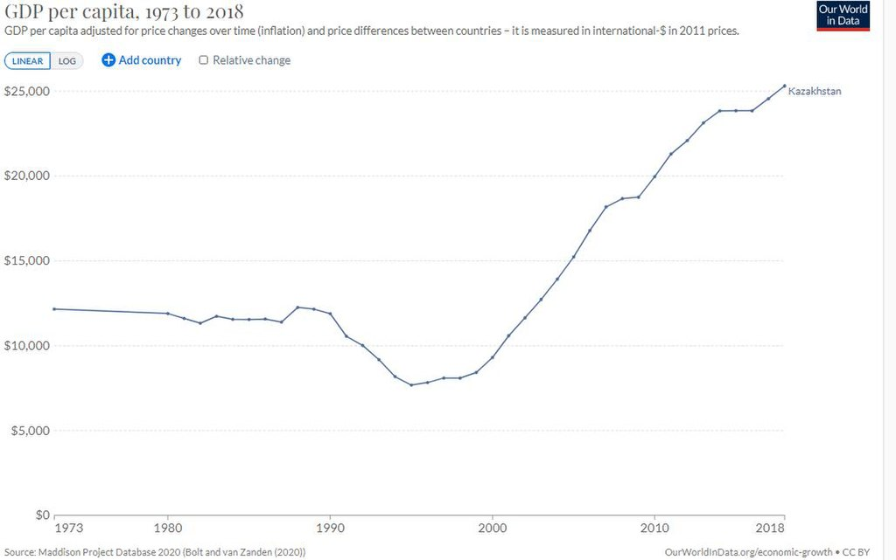

Economy
Kazakhstan's economy, supported by rising oil output and prices, grew at an average of 8% per year until 2013, before suffering a slowdown in 2014 and 2015. Kazakhstan was the first former Soviet Republic to repay all of its debt to the International Monetary Fund, 7 years ahead of schedule.
In September 2002, Kazakhstan became the first country in the CIS to receive an investment grade credit rating from a major international credit rating agency. By late December 2003, Kazakhstan's gross foreign debt was about $22.9 billion. Total governmental debt was $4.2 billion, 14% of GDP. There has been a reduction in the ratio of debt to GDP. The ratio of total governmental debt to GDP in 2000, was 21.7%; in 2001, it was 17.5%, and in 2002, it was 15.4%. It rose to 19.2% in 2019.

According to the 2010–11 World Economic Forum in Global Competitiveness Report, Kazakhstan was ranked 72nd in the world in economic competitiveness. One year later, the Global Competitiveness Report ranked Kazakhstan 50th in most competitive markets.
Foreign Trade
Kazakhstan's foreign trade turnover in 2018 was $93.5 billion, which is 19.7% more compared to 2017. Export in 2018 reached $67 billion (+25.7% vs 2017) and import was $32.5 billion (+9.9% vs 2017). Exports accounted for 40.1% of Kazakhstan's gross domestic product (GDP) in 2018. Kazakhstan exports 800 products to 120 countries.
Green economy
Kazakhstan launched the Green Economy Plan in 2013. It committed Kazakhstan to meet 50% of its energy needs from alternative and renewable sources by 2050. The green economy was projected to increase GDP by 3% and create some 500,000 jobs. The government set prices for energy produced from renewable sources. The price of 1 kilowatt-hour for energy produced by wind power plants was set at 22.68 tenge ($0.12), for 1 kilowatt-hour produced by small hydro-power plants 16.71 tenges ($0.09), and from biogas plants 32.23 tenges ($0.18).